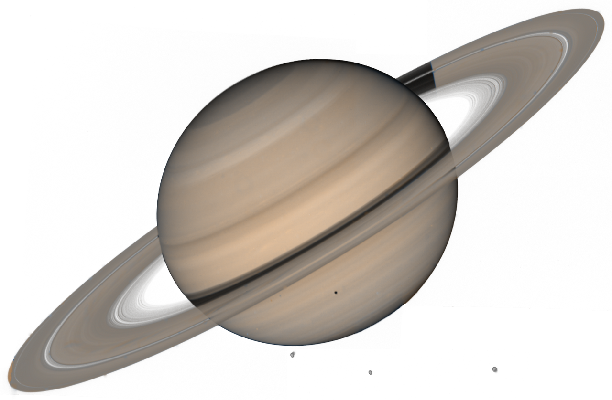

Состав и поверхность
Поскольку Сатурн является газовым гигантом, его поверхность обладает низкой плотностью: всего 0,687 г/куб. см. Состоит она из молекулярного водорода в паровом состоянии, который насыщен гелием. Под первым слоем находится скопление металлического водорода и гелия в жидком состоянии. Также в веществе имеются примеси летучих веществ, но ученые пока не смогли установить их состав. В центре Сатурна расположено твердое ядро радиусом в 12 500 км, обладающее неровной поверхностью. Оно разогрето до 11 700 градусов Цельсия и по составу может быть приближено к земному. Из-за высоких температур гелий, находящийся рядом с ядром, нагревается и постепенно поднимается вверх, двигаясь к верхнему слою. Из-за этого поверхность гиганта получает большое количество энергии, которое в два с половиной разе больше той, что достается от Солнца.
- Ср. радиус – 58 232 км
- Площадь поверхности – 42,72 млрд кв. км
- Ср. плотность – 0,687 г/см3
- Ускорение свободного падения – 10,44 м/с2
- Масса – 5,6846 х 1026 кг
Орбита и вращение
За время полного оборота вокруг Солнца планета находится от него на среднем расстоянии, равном 1,43 млрд км. Для сравнения, Земля располагается в 9,5 раз ближе к звезде. Из-за такой внушительной дистанции планета совершает полный оборот за 10 756 дней. Газовый гигант обладает третьим по величине эксцентриситетом в Солнечной системе, уступая лишь Марсу и Меркурию. Этот параметр показывает, как сильно орбита отклоняется от формы окружности. Фактически, это разница между максимальным и минимальным расстоянием до Солнца. У Сатурна эксцентриситет равен примерно 154 000 000 км, что в 400 раз больше расстояния между Землей и Луной.
Ось вращения планеты находится под наклоном на 26,73 градуса. Благодаря этому на планете возможна смена сезонов. Однако поскольку Сатурн находится на большом расстоянии от Солнца, разница между временами года здесь не так заметна.
Планета вращается вокруг оси довольно быстро, уступая по скорости лишь Юпитеру. Сутки на Сатурне длятся 10 ч 45 мин. Из-за высокой скорости форма планеты является не круглой, а сферической, с заметным утолщением на экваторе.
Кольца Сатурна
Сатурн обладает самыми заметными кольцами среди всех планет Солнечной системы. Они состоят в основном из частиц льда, космического мусора и пыли. Именно поэтому они так хорошо заметны даже на большом расстоянии.
На данный момент известно семь колец газового гиганта. Для удобства они назывались буквами английского алфавита по мере их открытия: A, B, C, D, E, F и G. При рассмотрении Сатурна в телескоп с поверхности Земли хорошо заметны только A, B и C.
Исследования показали, что семь колец состоят из тысяч более мелких, прижатых друг к другу. При этом между группами имеются расстояния. Самая большая дистанция находится между кольцами A и B: она составляет 4700 км.
Интересный факт: поскольку поверхность Сатурна имеет низкую плотность, планета не утонет, если поместить ее в воду.
Спутники Сатурна
Вокруг Сатурна вращается 62 основных спутника, обладающих определенными особенностями, причем девять небесных тел до сих пор не имеют названия. Больше половины обладают радиусом менее 5 км. Но на орбите газового гиганта есть и крупные спутники, размеры которых могут доходить до 5000 км. Большинство небесных тел названо в честь древнегреческих титанов. Среди них выделяют группу внутренних лун, находящихся между планетой и кольцами: Мимас, Энцелад, Тефия, Диона.
Внешние спутники располагаются за пределами кольца E. В большинстве своем они состоят из горных пород и льда. Среди них можно выделить следующие основные луны: Рея, Титан, Япет, Гиперион.